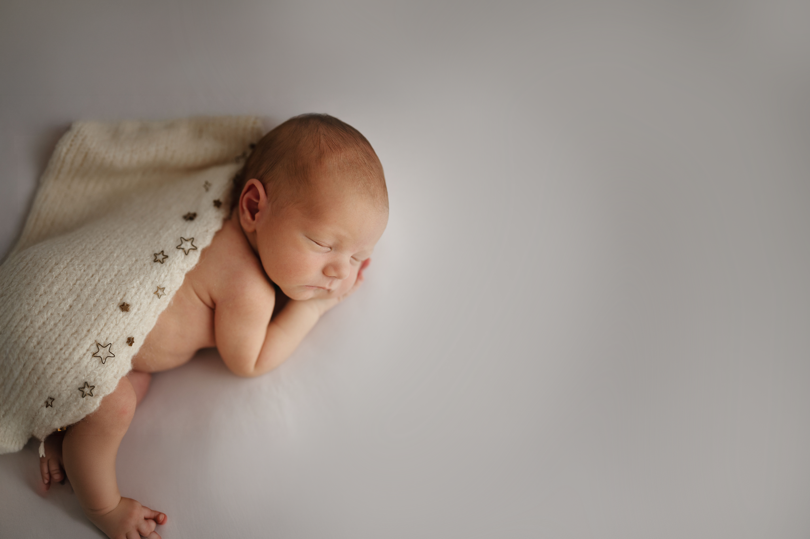

Neugeborenenfotografie Karlsruhe & Walzbachtal – Newborn Shooting & Babyshooting
Zeitlose Neugeborenenfotos voller Wärme, Nähe und echter Emotionen
Willkommen bei Anna Duleba Photography – Ihrer Fotografin für Neugeborenenfotografie in Karlsruhe, Pfinztal und Umgebung. Ich kreiere moderne, natürliche und ästhetisch harmonische Babyfotos – für Eltern, die ein Newborn Shooting oder Babyshooting in Karlsruhe suchen. Ob klassisches Newbornshooting im Studio oder emotionale Familienbilder – bei mir entstehen zeitlose Erinnerungen mit Gefühl und Ruhe.
In meinem liebevoll eingerichteten Studio in Pfinztal entstehen maßgeschneiderte Newborn Sessions, die ganz auf Ihr Baby abgestimmt sind: ruhig, sicher, weich und reduziert – mit handgefertigten Decken, feinen Stoffen und ausgewählten Accessoires in Naturtönen. Ideal für Familien aus Karlsruhe, Durlach, Weingarten, Grötzingen, Ettlingen, Pforzheim und Umgebung, die sich exklusive Neugeborenenfotos wünschen, die auch in vielen Jahren noch berühren.
Tipp: Die beliebtesten Termine sind schnell vergeben. Am besten melden Sie sich bereits während der Schwangerschaft, damit wir für die ersten 5–14 Lebenstage einen passenden Slot reservieren können.
Einblick in meinen Bildstil
Warm, zeitlos und natürlich – ein Beispiel aus meiner Neugeborenenfotografie in Karlsruhe & Walzbachtal. (Zum Vergrößern einfach anklicken.)
Viele Familien kommen zu mir, weil sie Babyfotos wünschen, die warm, zeitlos und voller Gefühl sind – Bilder, die ihre Geschichte mit Herz erzählen.
Euren Newborn-Termin planen
Die ersten Tage vergehen schneller, als man denkt. Wenn euch dieser Bildstil anspricht, könnt ihr euren Termin bereits während der Schwangerschaft vormerken.
Termin anfragenMein Studio für Neugeborenenfotografie in Walzbachtal
Mein Studio liegt nur wenige Minuten von Karlsruhe entfernt und bietet alles, was wir für ein sicheres und warmes Neugeborenenshooting brauchen: Viele Familien finden mich über Google unter Newborn Shooting Karlsruhe oder Babyshooting in der Nähe.
Neugeborenenfotografie & Babyshooting für Familien aus Pforzheim
Viele meiner Familien kommen auch aus Pforzheim zu mir ins Studio nach Walzbachtal. Die Fahrt lohnt sich – denn hier erwarten Sie ruhige, sichere und zeitlose Neugeborenenfotos in einer entspannten Atmosphäre, fernab von Hektik und Zeitdruck.
Wenn Sie nach Babyfotografie in Pforzheim oder einem Newborn Shooting in Pforzheim suchen, begleite ich Sie gerne mit viel Erfahrung, Feingefühl und einem klaren Fine-Art Bildstil. Gemeinsam schaffen wir Erinnerungen, die bleiben.
Mein Studio ist von Pforzheim aus bequem erreichbar – viele Eltern verbinden den Termin bewusst mit einem ruhigen Vormittag, während ich mich liebevoll um Ihr Baby kümmere.
- weiches, natürliches Licht für zarte Hauttöne
- sichere, liebevoll eingerichtete Sets
- hochwertige Decken, Stoffe und Accessoires
- genügend Platz für Eltern und Geschwister
- eine ruhige Atmosphäre zum Stillen, Kuscheln und Ankommen
Ich nehme mir bewusst Zeit – nichts wird gehetzt, nichts erzwungen. Ihr Baby gibt den Rhythmus vor, ich begleite einfühlsam.
Wie läuft ein Neugeborenen Shooting ab?
- Ankommen & Ankommen lassen – Zeit zum Stillen, Kuscheln und Beruhigen.
- Sanfte Baby-Posen – auf Decken, im Körbchen oder auf dem Beanbag.
- Familien- & Geschwisterbilder – natürlich, nah und emotional.
- Detailaufnahmen – Hände, Füßchen, Wimpern, Gesicht.
- Online-Galerie – Sie wählen in Ruhe Ihre Lieblingsbilder aus.
- Feinbearbeitung in Premium-Qualität – Hauttöne, Farben und Retusche in meinem Bildstil.
So entstehen zeitlose Neugeborenenfotos, die Sie auch in vielen Jahren noch mit Wärme und Liebe anschauen werden.
Der beste Zeitpunkt für Newborn-Fotos
Für klassische Newborn Fotos empfehle ich die ersten 5–14 Lebenstage. In dieser Zeit schlafen Babys noch viel und lassen sich besonders zart und eingerollt fotografieren.
Aber auch wenn Ihr Baby älter ist – zum Beispiel 3–6 Wochen – können wunderschöne, natürliche Bilder entstehen. Dann liegt der Fokus weniger auf Posen und mehr auf Nähe, Mimik und echten Momenten.
Newborn-Termin rechtzeitig anfragen
Die schönsten Newborn-Bilder entstehen meist in den ersten 5–14 Lebenstagen. Sichert euch entspannt einen passenden Termin.
Termin anfragenSicherheit an erster Stelle
Die Sicherheit Ihres Babys steht für mich immer an erster Stelle. Der Kopf ist stets gestützt, Ihr Baby wird nie allein gelassen und nichts wird erzwungen. Temperatur, Atmung und Körpersprache – ich achte auf jedes Detail. So entsteht ein Newborn Shooting, das sich gut anfühlt – für Ihr Baby und für Sie.
Studio oder Homestory – zwei sichere Optionen für Neugeborenenfotos
Für Neugeborenenfotografie arbeite ich bewusst ausschließlich im Studio oder bei Ihnen zu Hause (gegen Aufpreis). So bleiben Wärme, Ruhe und Sicherheit in den ersten Lebenstagen immer an erster Stelle.
- Studio in Walzbachtal – warm, ruhig, perfekt vorbereitet und ideal für klassische, zeitlose Newbornfotos.
- Homestory bei Ihnen zu Hause – in vertrauter Umgebung, mit natürlichem Licht und echten, entspannten Momenten (gegen Aufpreis).
Outdoor-Newborn-Shootings biete ich nicht an – mir sind Sicherheit, Wärme und Ruhe wichtiger als äußere Kulissen.
Häufige Fragen zum Neugeborenenshooting
Wann sollte ich buchen?
Am besten bereits in der Schwangerschaft. Nach der Geburt stimmen wir den finalen Termin (5–14 Tage) flexibel ab.
Was sollen wir mitbringen?
Im Studio ist alles da. Sie brauchen nur Windeln, Milch/Fläschchen (falls nötig) und ggf. ein persönliches Erinnerungsstück.
Was kostet ein Neugeborenenshooting in Karlsruhe?
Die Preise hängen vom Paket und der gewünschten Bildanzahl ab. Eine klare Übersicht finden Sie in meiner Preisliste.
Wie lange dauert ein Newborn Shooting?
In der Regel 2–3 Stunden – inklusive Still- und Kuschelpausen. Ohne Stress, ohne Zeitdruck.
Preise & Pakete
Eine detaillierte Übersicht über alle Pakete finden Sie hier:
Zur Preisliste
Platz für euer Neugeborenenshooting sichern
Ihr kennt nun Ablauf und Preise. Gerne reserviere ich einen passenden Termin für eure Familie.
Termin anfragenFreie Newborn-Termine ansehen & reservieren öffnen →
Wichtig: Bitte nutze diese Reservierung erst nach der Geburt, optimal innerhalb der ersten 5–14 Lebenstage.
Weitere Tipps rund um die Neugeborenenfotografie
Vorbereitung, Outfit-Tipps und viele weitere Informationen finden Sie in meinem Blog.